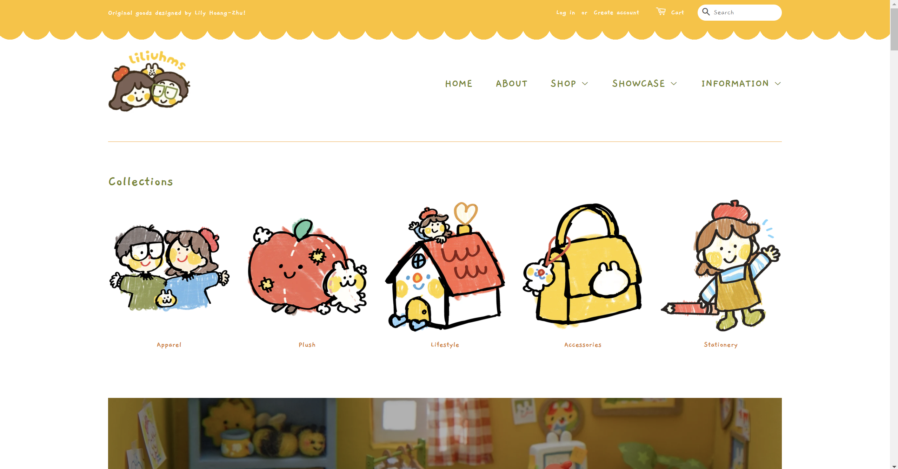
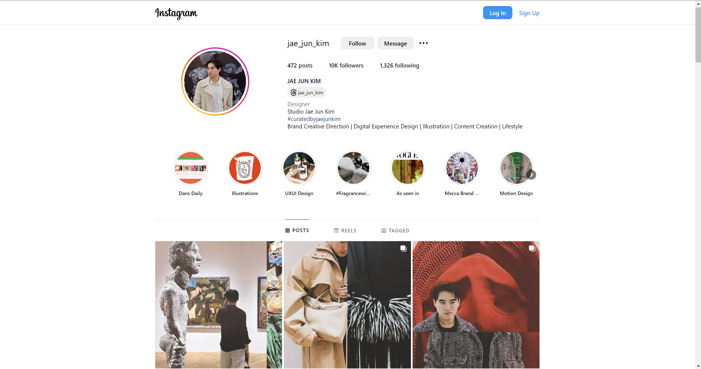
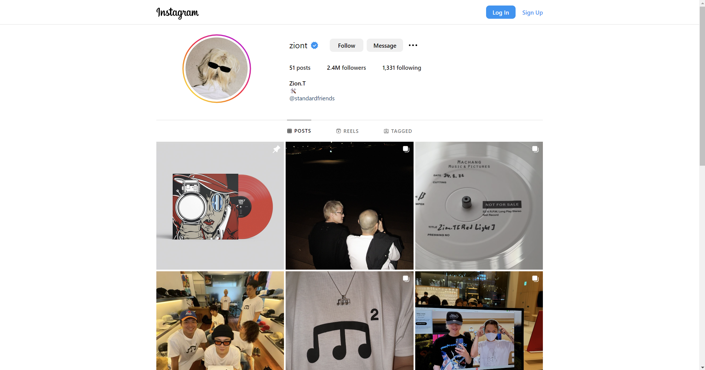

My Top 3 Inspirations (at the moment)
Lily Hoang-Zhu (aka liliuhms)


My first inspiration is an artist named Lily Hoang-Zhu,
also known as liliuhms on social media. She is a freelance
illustrator and designer who illustrates for children's
books and produces merchandise for her small business. She
is always creating and putting out new ideas for her store,
always exploring new ways to make art, always striving to
enjoy the work she does.

Jae Jun Kim
Another inspiration for me is a designer named Jae Jun Kim.
He is the first designer who works in UX/UI who I've discovered
and been able to follow to see their works. He used to have a
cool website but I can't find it anymore. He does branding and
graphic design work as well but my primary interest in him is
his high-end luxury design for websites. That being said, the
only works I can find currently are in his highlights on Instagram,
as his portfolio site may be under repair.

Zion.T
My last inspiration is a korean musical artist by the
name of Zion.T (not associated with Zionism). He's a rnb
and pop artist with a unique style I really enjoy. He doesn't
have a website and his Instagram is malfunctioning for me but
I will link it here regardless.
